Microscopy
Gallery
Histological sections of rat brain tissue obtained during my experimental research on the effects of a hypercaloric-hypoprotein perinatal environment on hippocampal formation. Images span Nissl, Kluver-Barrera, and Golgi-Cox staining at multiple magnifications.
Coronal section of rat brain — full hippocampal view at low magnification

Hippocampal cytoarchitecture — bilateral symmetry visible
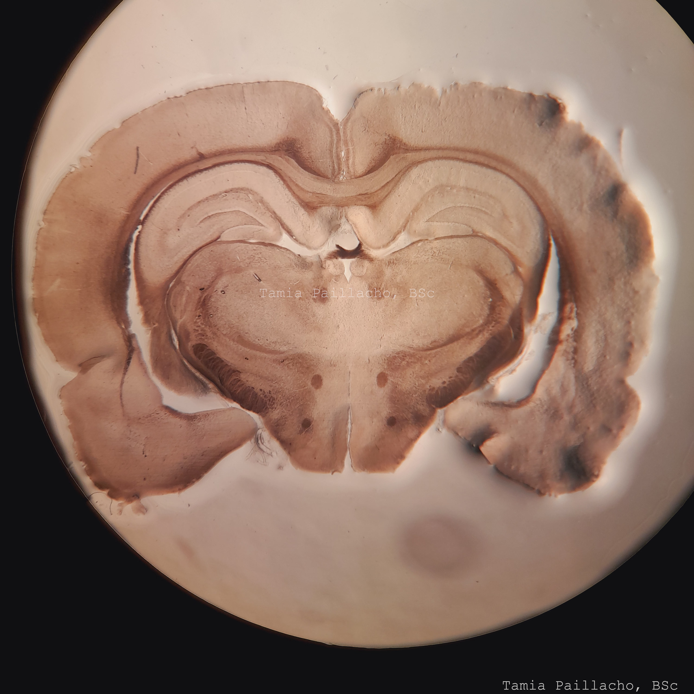
Nissl-stained coronal section — hippocampal subregions clearly delineated

Rat 7-2 — full hippocampal section, Hematoxylin-Eosin staining at 4× showing Gyrus Dentatus

Rat 3-3 — Dentate Gyrus, Hematoxylin-Eosin at 4×
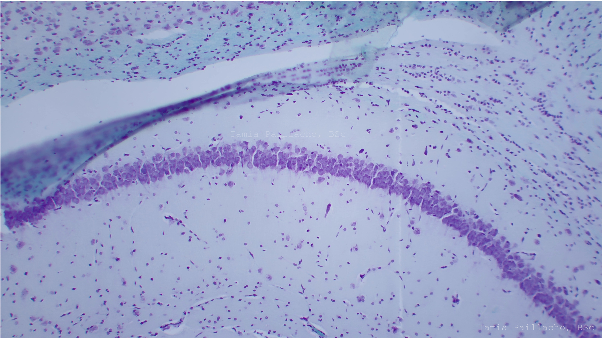
Rat 7-1 — CA1 pyramidal cell layer at 10× magnification
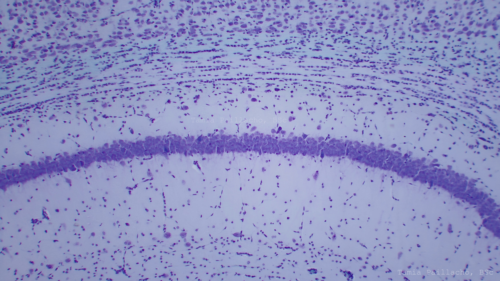
Rat 3-3 — CA1 region at 10× showing neuronal density
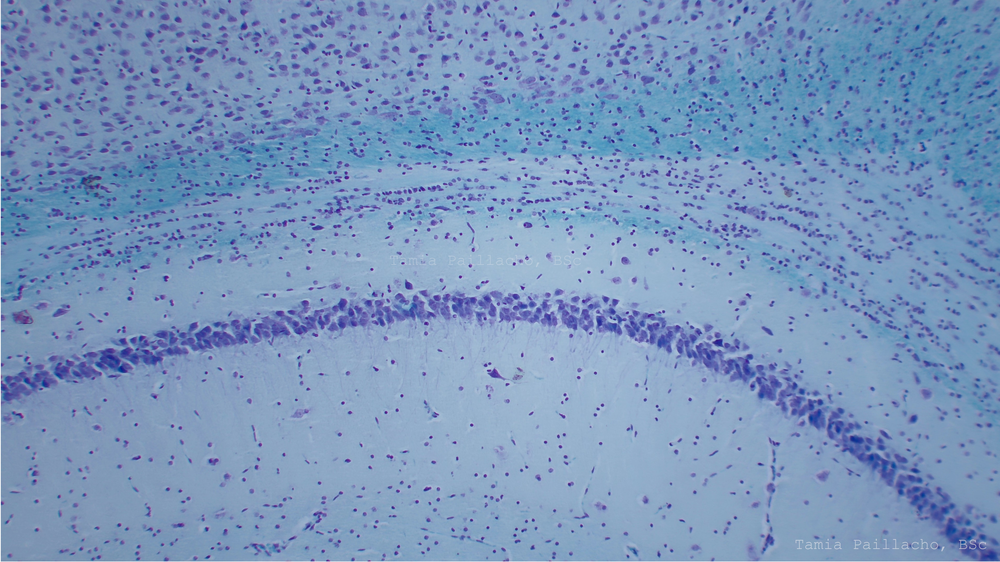
Rat 6-1 — CA1 hippocampal region at 10× magnification
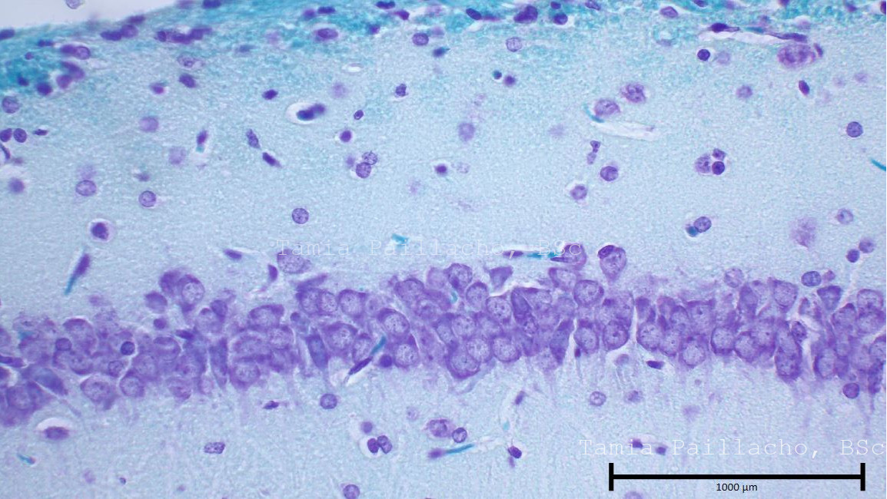
Close-up of CA1 pyramidal neurons — Nissl staining highlights cell bodies

Granule cell layer — Nissl-stained, individual neuron morphology visible
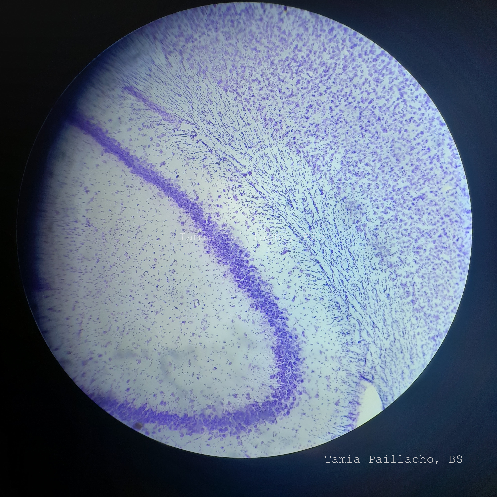
High-magnification view — individual neuronal profiles and spatial distribution
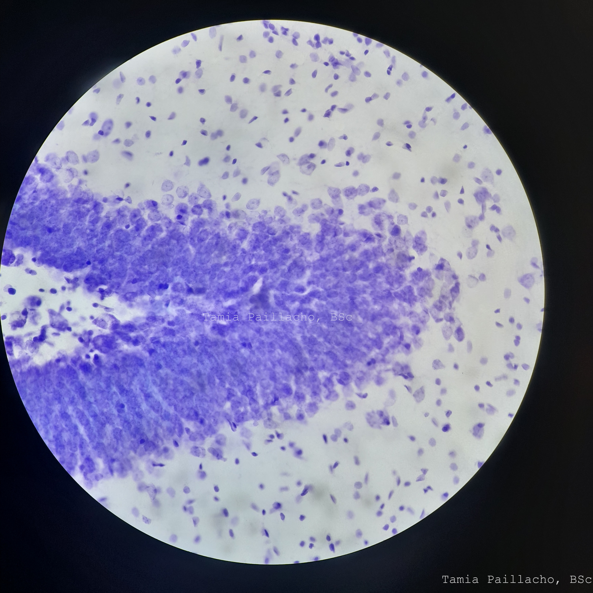
8 µm section — Gyrus Dentatus, Hematoxylin staining (Hxd2 protocol)
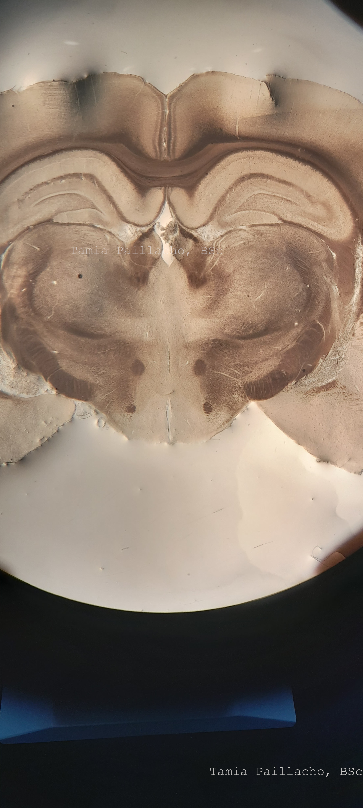
Hippocampal formation with visible regional organization.
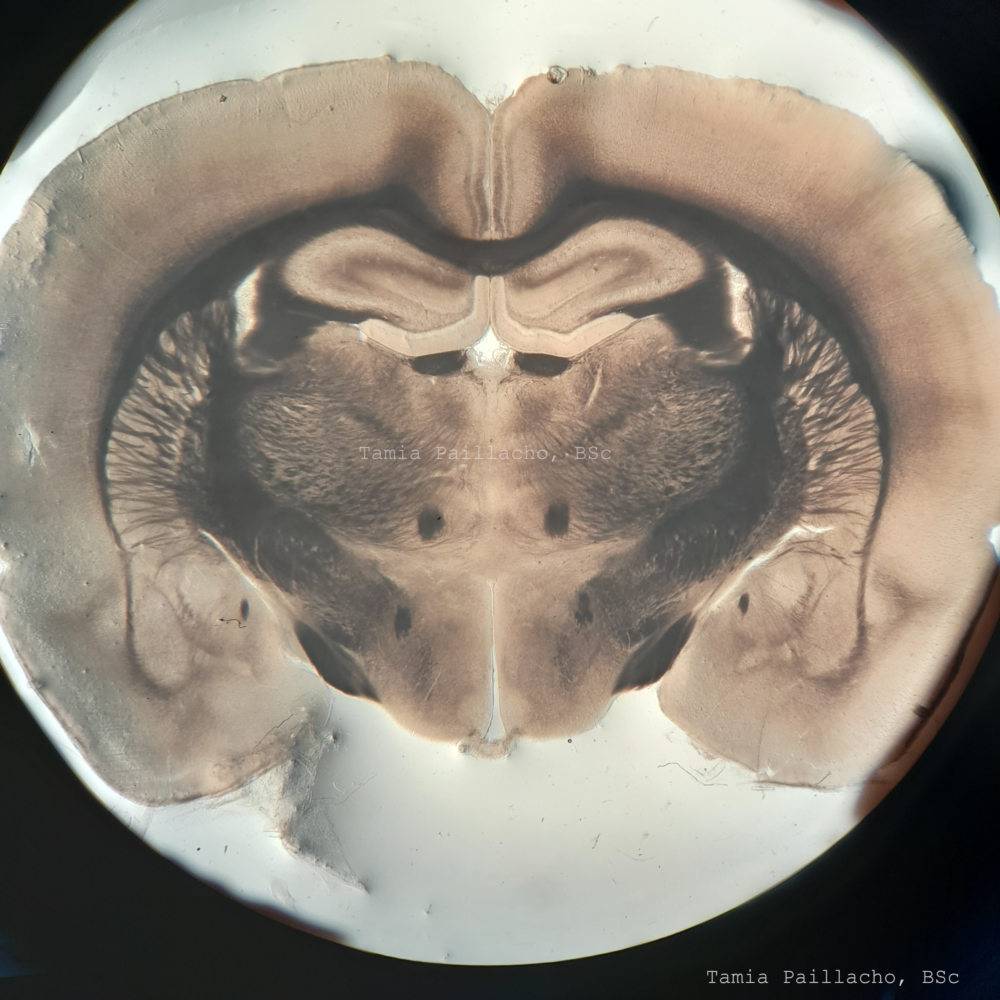
Additional hippocampal section from the experimental image set.
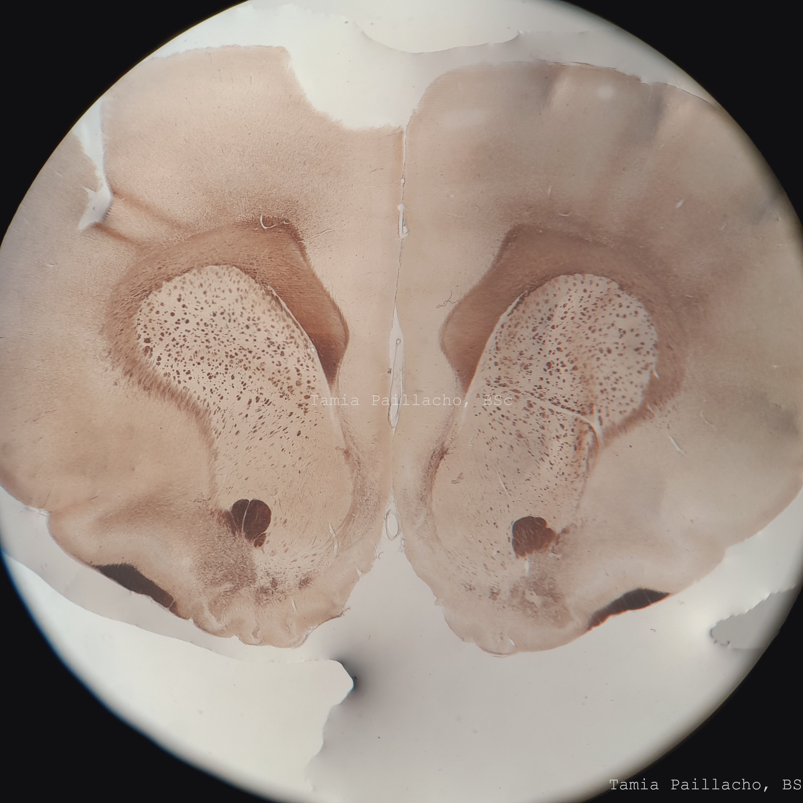
Frontal cortex section from the rat brain image set.
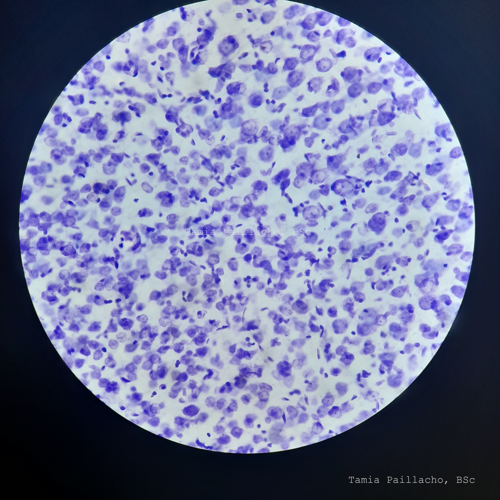
Prefrontal cortical tissue at high magnification with Nissl staining.
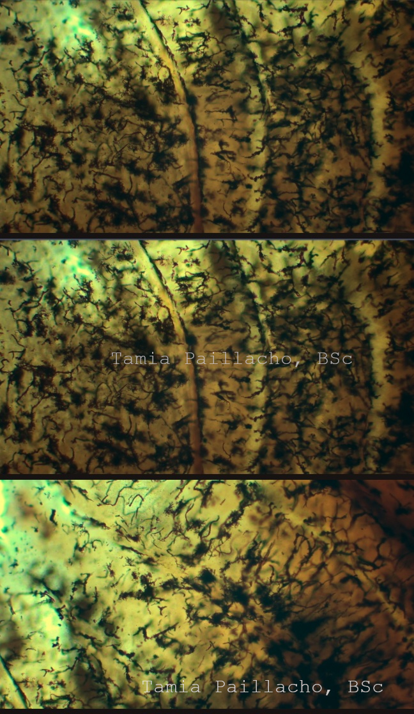
Golgi-Cox preparation showing cortical neuronal morphology.

Alternate low-magnification Nissl preparation of the hippocampal formation.